- United Boeing 737-900ER in First Class
- United Club at B6
- United Boeing 787-9 in First Class (Polaris seat)
- Star Alliance Lounge Los Angeles (Business Class)
- United Express E175 in First Class
Below is Post 1.
United Airlines Boeing 737-900ER in First Class, Minneapolis to Chicago (January 2022)
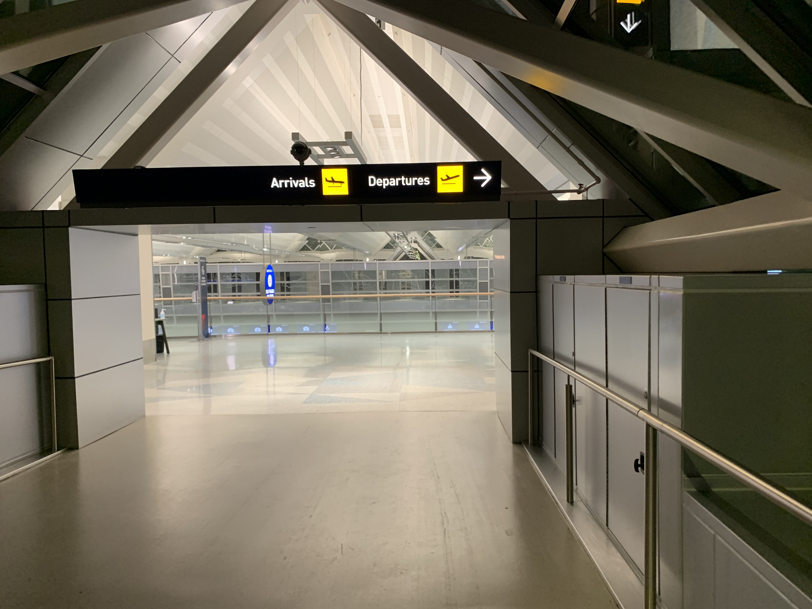
I arrived at the airport around an-hour-and-a-half before departure because I decided to eat outside of the airport first. I got in just before 7am for an 8am departure.

For some reason, I have never noticed this until now. Even after… many flights out of MSP… and this seems new. What was this?
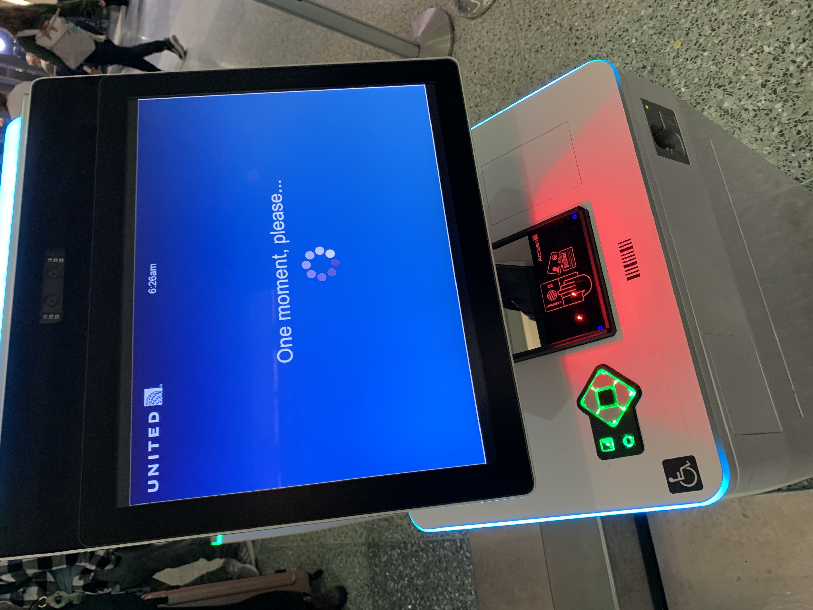
The kiosks were also quite new, though I may have forgotten if I’ve seen them last time (in July 2021).
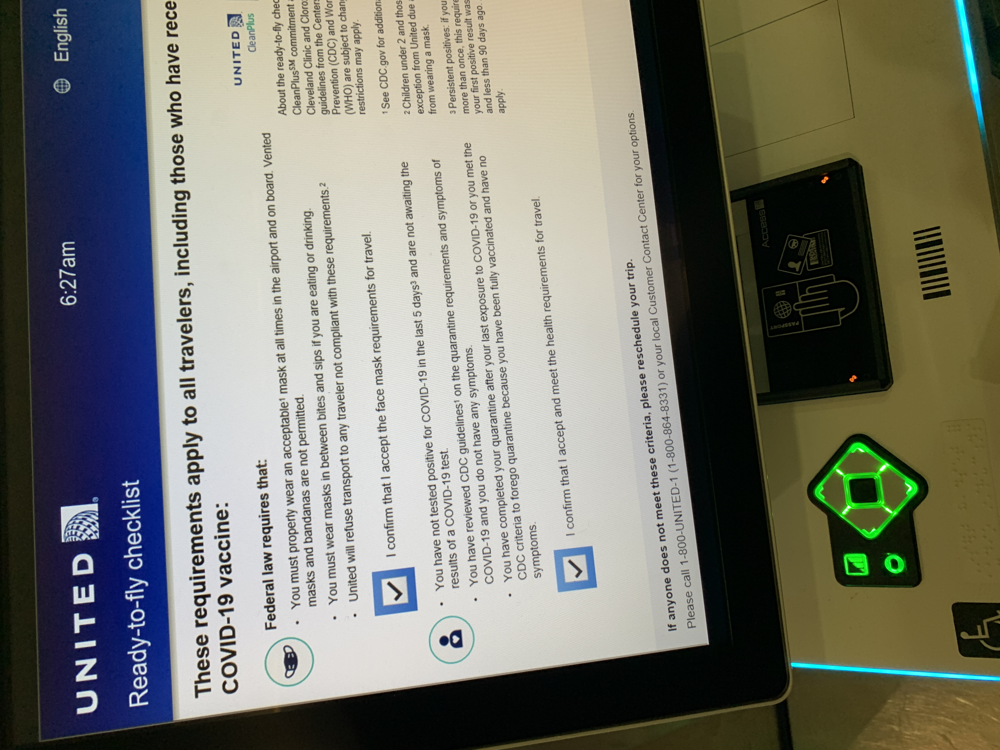
And with Omicron… Covid is still a concern for the airlines (or at least following CDC and federal government requirements).
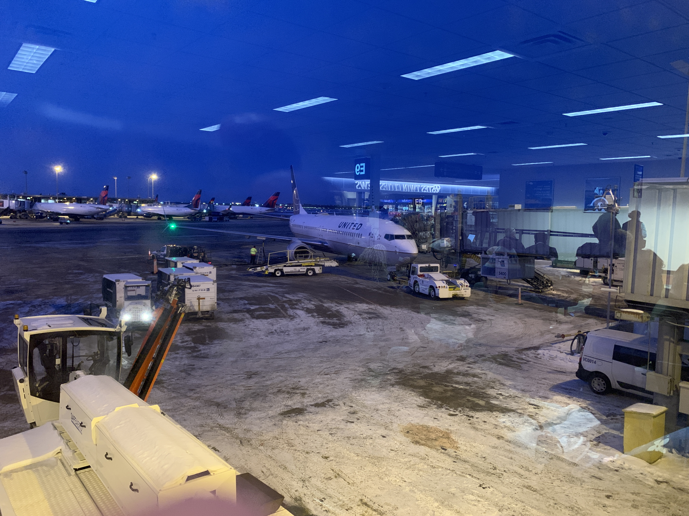
I had no intention of boarding early. I already had multiple examples of a flight on United’s Boeing 737-900ER, and I did not need more pictures. By the time I was at the gate, the flight was already halfway through boarding, so I could just stroll onto the plane.

But not before welcoming back Air Canada. Seems they now have their own gate E3, instead of borrowing from United’s E8.

Here’s a CRJ200 stuck in Minneapolis (seems like a weather diversion, but I didn’t take a picture of the status screen).

And ICEMAN has work today.

Here’s the aircraft at MSP. The difference is I actually decided to use my camera, this time.
By the time we neared departure, the sun was out.
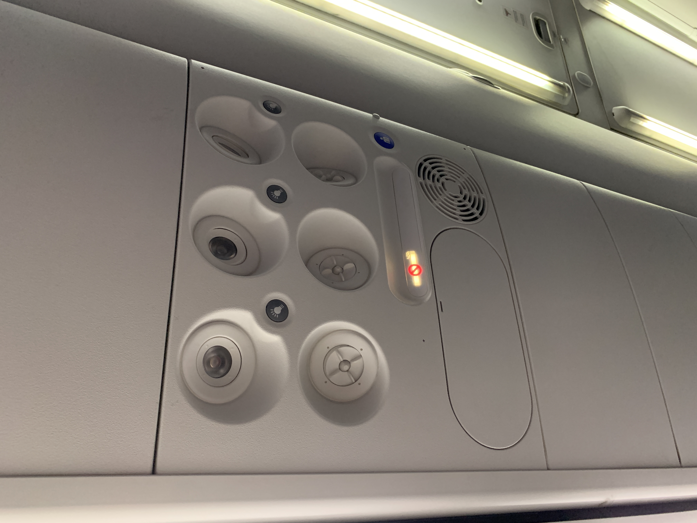
I always appreciate these overhead air vents. They are always nice to enjoy!
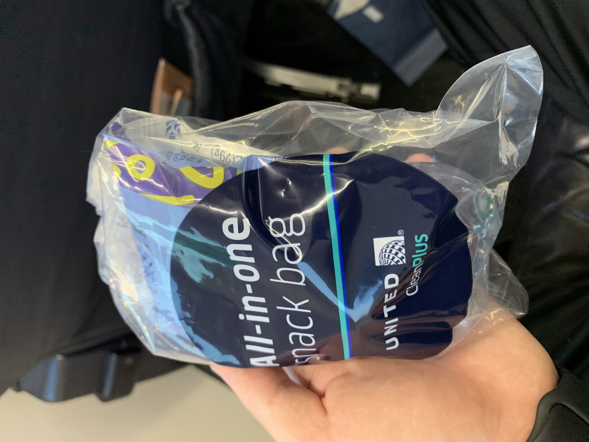
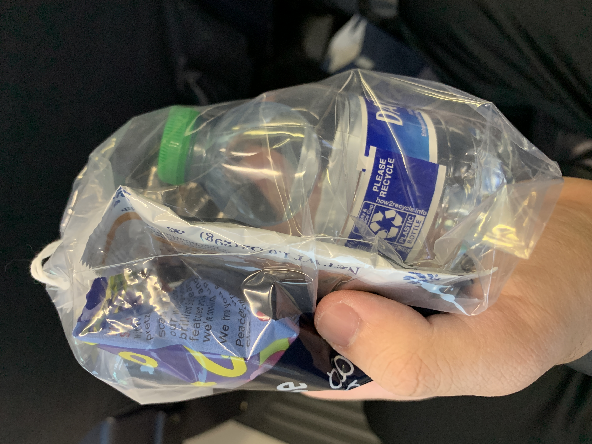
For some reason, snacks were passed out before departure.
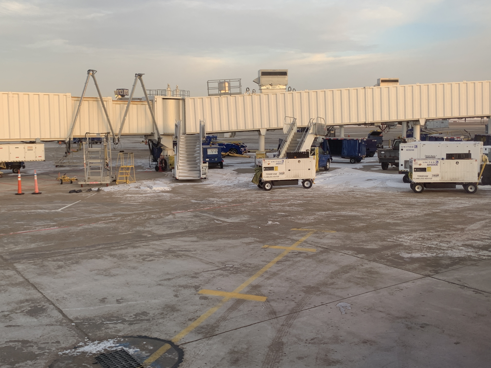
Also, what was the purpose of those air stairs?
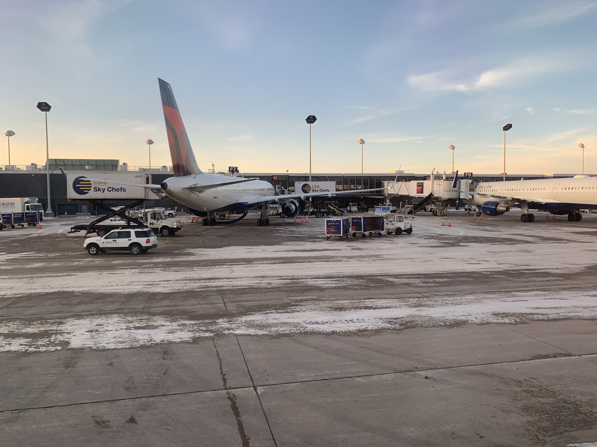
Pushback on time, and here’s a Delta Boeing 757-200.
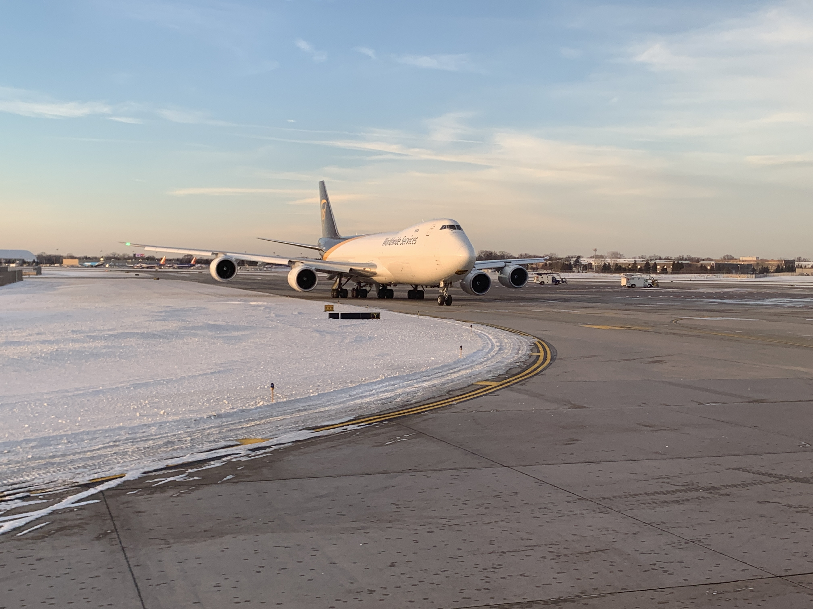
I’m glad I did see the Queen while taxiing to the runway for takeoff.
Takeoff on time with derated thrust, later increased to Climb power.
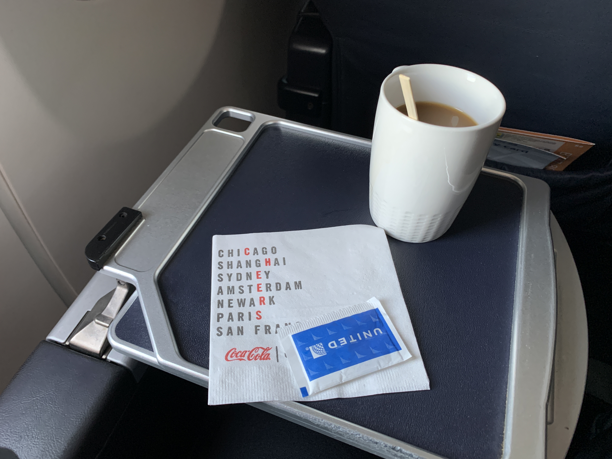
This post is mainly to describe the return of the mugs and glasses! Coffee is nice, but coffee is even better in an actual mug! (Same for any drink in glasses, too).
Landing early, and of course, I still had the “curse of the north runway” and dealt with a loooooooooooooong taxi to the gate. Whatever.

Here’s the plane parked at the gate. She flies to Denver next.
And time to go to the United Club… on the other side of the tunnel. Just because I didn’t have club cards (only one-time passes), and the only one on this side of the tunnel didn’t accept those one-time passes.
I’m happy mugs and glasses are back. I also heard predeparture beverage are back too (did that snack bag count?) because I always enjoy getting a drink before departure. This being said, I had CPU upgrades, so I’ll enjoy it as much as I can, for as long as I can. If sitting in Economy, I’ll bring a bottle of water.
Honestly, I’m just glad to sit in First Class for the short hop. This was a CPU upgrade, so I’m appreciative of getting to sit up front. That’s all I’ll say.
And now, off to the lounge for the long layover